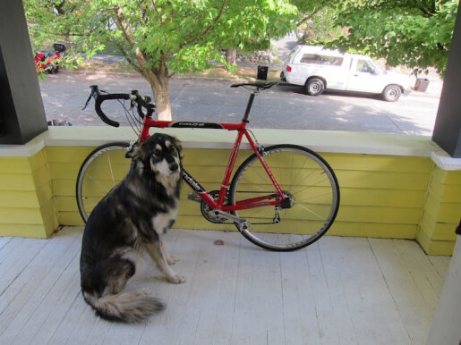

Object Detection · S×S×(B·5+C)
Explore the 7×7 grid, two boxes per cell, class scores, and the five-term loss — using the classic dog / bicycle / car scene.
Hover a cell to inspect neurons. Use Draw box to click-drag geometry, or Set class to pick a box then assign dog / bicycle / car.

Model prediction shape S×S×(B·5+C) = 7×7×13. Click a spatial cell below, then inspect / edit its 13 channels (B1, B2, classes).
Click a component to expand its formula and the live numbers from your prediction vs. ground truth (λcoord=5, λnoobj=0.5).